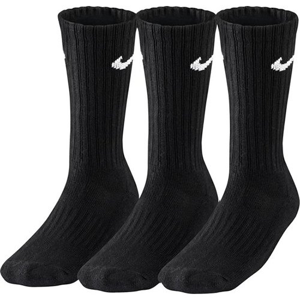

Sportsokken
Deze sportsokken zijn ontworpen voor alle activiteiten. Deze sokken kunnen zowel indoor als outdoor sporten aan. Ze zijn gemaakt van spannend textiel dat zich mooi aanpassen aan elke voet. Dit exemplaar is verder ook in het wit te verkrijgen.
Kenmerken
- Kleur
- Zwart
- Patroon
- Geen patroon
- Beschikbaar in maten
- 32 - 36
- 37 - 42
- 43 - 48
- Ideaal voor
- Alle sporten